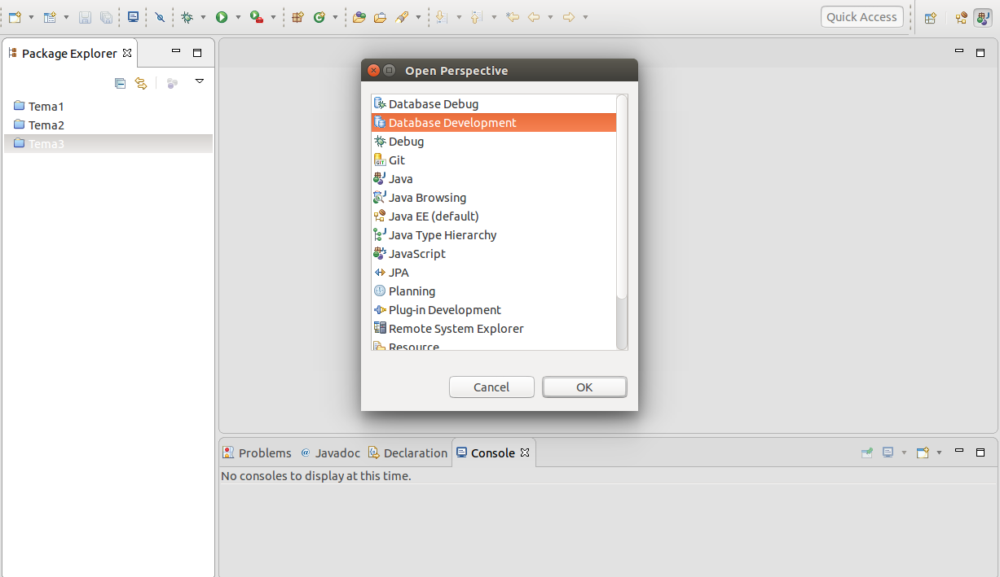
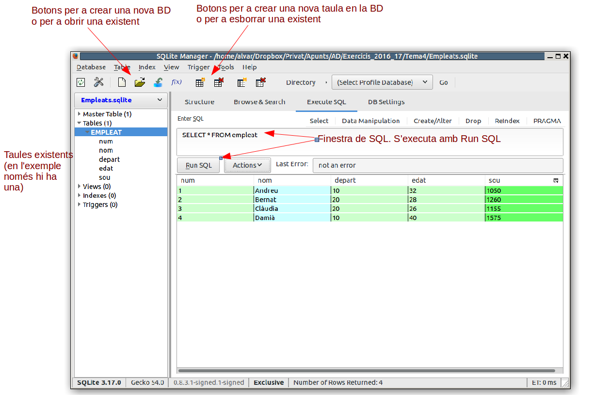
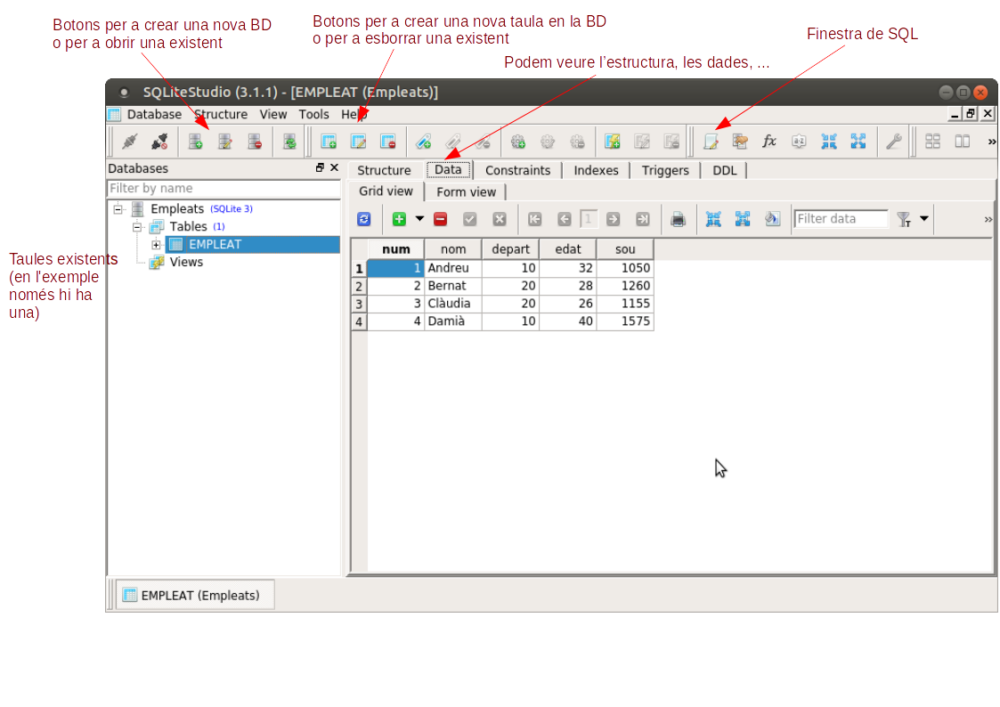

4 - Perspectiva de Desenvolupament de Bases de Dades en Eclipse
Abans de començar a treballar la persistència en diferents Bases de Dades Relacionals, ens configurarem Eclipse per a poder treballar còmodament amb elles.
Des dels programes Java podríem connectar ja mateix amb les diferents BD amb els connectors JDBC, però abans ens muntarem una perspectiva per a poder treballar, veure les taules amb les dades i fins i tot administrar aquestes Bases de Dades. Utilitzarem els connectors (drivers) JDBC, però des d'un entorn, una perspectiva més còmoda. Si no tinguérem aquesta perspectiva que ens permet "veure i tocar" les taules, o bé ahuríem de saber perfectíssimament l'estructura de totes les taules de la Base de Dades, o tenir una eina pròpia del SGBD per poder veure les taules. Com que són molts els SGBD que anem a connectar ens convé la perspectiva
La perspectiva és Desenvolupament de Bases de Dades (Database Development). Depenent de la instal·lació d'Eclipse que tinguem, aquesta perspectiva estaria ja disponible. En concret, en la que us vaig recomanar instal·lar (Eclipse IDE for Java EE Developers) ja està instal·lada. La manera d'accedir és:
Window --> Perspective --> Open Perspective --> Other
I triem la perpectiva Database Development.

Si tinguérem una versió d'Eclipse que no té aquesta perspectiva, la podrem instal·lar. Millor dit, instal·laríem les eines (tools) que ens permeten tenir-la.
El següent vídeo explica el procés d'instal·lació i canvi en la perspectiva (recordeu que si ja teníeu la perspectiva no us cal fer açò)
Connexió a PostgreSQL
Com a primer exemple de connexió, intentarem connectar a PostgreSQL. Farà falta especificar:
- Primer el controlador (driver) de PostgreSQL. Triarem un de tipus IV (en el vídeo es veu el procés de baixada del driver; l'enllaç és aquest JDBC42 Postgresql Driver, Version 9.4.1211), però recordeu que també teniu el driver més actual en el curs de Moodle)
- Després les dades de connexió, que seran:
- Servidor: 89.36.214.106
- Base de dades: geo_ad
- Usuari: geo_ad
- Contrasenya: geo_ad
De la configuració anterior podem observar la URL de connexió que va a continuació. És important, perquè després quan connectem des dels nostres programes Java, haurem d'especificar-la també. Haurem de substituir servidor per l'adreça IP o el nom del servidor, la base_de_dades per la base de dades a la qual ens volem connectar.
URL de PostgreSQL
jdbc:postgresql://servidor:5432/base_de_dades
Connexió a Oracle
Per a poder connectar a Oracle, utilitzarem un usuari genèric que està en quasi totes les instàncies d'Oracle anomenat SCOTT. El servidor està en una altra màquina que la resta de SGBD, per tant pareu atenció a l'adreça del servidor. Farà falta especificar:
- Primer el controlador (driver) de Oracle (el podeu baixar des d'ací ojdbc6.jar, però us faria falta donar-vos d'alta de forma gratuïta; per més comoditat el teniu a l'aula virtual)
- Després les dades de connexió, que seran:
- Servidor: 94.177.240.173
- Instància: orcl
- Base de Dades: scott
- Usuari: scott
- Contrasenya: tiger
Aquest vídeo comenta el procés (suposa que ja ens hem baixat el driver JDBC apropiat):
I la cadena de connexió que ens quedarà serà
URL d'Oracle
jdbc:oracle:thin:@servidor:1521:instancia
Connexió a MySQL
Repetim el procés per a MySQL. El servidor està en la mateixa màquina que PostgreSQL (89.36.214.106). L'usuari amb que connectarem ara es diu factura. Haurem d'especificar:
- Primer el controlador (driver) de MySQL (el podeu baixar des d'ací https://dev.mysql.com/get/Downloads/Connector-J/mysql-connector-java-5.1.44.tar.gz, però per a més comoditat el teniu disponible a l'aula virtual)
- Després les dades de connexió, que seran:
- Servidor: 89.36.214.106
- Base de Dades: factura
- Usuari: factura
- Contrasenya: factura
URL de MySQL
jdbc:mysql://servidor:3306/base_de_dades
Connexió a SQLite
SQLite és un SGBD molt diferent als anteriors. En tots els anteriors s'utilitza l'arquitectura client-servidor. I per tant el servidor de Base de Dades no té per què estar en la mateixa màquina.
Però en moltes ocasions ens pot venir bé un SGBD molt més xicotet i senzill que guarde la BD en la mateixa màquina, que siga monousuari i que pese molt poc.
SQLite és un SGBD multiplataforma (podrem fer-lo rodar en qualsevol plataforma) que és molt lleuger. Admet la major part de l'estàndar SQL-92. I guarda una Base de Dades en un únic fitxer. Una altra característica és que des de Java, amb el driver JDBC podrem accedir a les Bases de Dades SQLite sense que faça falta cap motor de Base de Dades. Per tant és ideal com a Base de Dades que puguem copiar a les nostres aplicacions.
També intentarem connectar des de la perspectiva. Però ara no caldrà especificar on està el servidor ni quin usuari s'ha de connectar. Haurem de dir el fitxer amb la ruta on està (o estarà) la Base de Dades. Per tant només haurem d'especificar:
- Primer el controlador (driver) de SQLite (sqlite-jdbc-3.14.2.1.jar)
- Després les dades del fitxer: ruta i nom. La ruta ha d'existir. Si el fitxer no existeix, el crearà.
URL de SQLite
jdbc:sqlite:ruta_del_fitxer_sqlite
Com hem comentat, SQLite és més senzill que els altres SGBD. Concretament, els tipus de dades que utilitza són:
-
INTEGER. El valor és un enter amb signe, que ocupa 1, 2, 3, 4, 6, o 8 bytes depenent de la grandària del valor.
-
REAL. El valor és un número real en coma flotant que ocupa 8 bytes (doble precisió).
-
TEXT. El valor és una cadena de caràcters que pot estar codificada en UTF-8, UTF-16BE o UTF-16LE, depenent de la codificació de la Base de Dades. No ens preocuparem de la codificació interna.
-
BLOB. Per a guardar dades binàries que es guardaran exactament com entren, sense mirar el format.
Des de la perspectiva de Bases de Dades podrem visualitzar les taules i fins i tot crear-les, amb SQL.
Com que les Bases de Dades SQLite les haurem d'administrar del tot, si resulta un poc incòmoda l'administració des de la perspectiva d'Eclipse, podem utilitzar alguna eina que ens ho facilite. Segurament la més còmoda és un plugin per a Firefox anomenat SQLite Manager. És molt fàcil d'instal·lar (només heu de buscar Firefox SQLite Manager, i segur que la primera opció serà la d'instal·lar el plugin). Una vegada instal·lat segur que haureu de reiniciar Firefox si ja l'estàveu utilitzant. La seua utilització és intuïtiva. En aquesta imatge estem veient una BD ja creada, que crearem i utilitzarem més avant:

Lamentablement, no funciona aquest plugin de moment en l'última versió de Firefox. Segurament ho arreglaran prompte.
Hi ha una altra alternativa, que és la d'utilitzar el SQLiteStudio, un programa en versió portable que no cal instal·lar, únicament descomprimir siga quina siga la plataforma utilitzada. El podem baixar de la següent adreça:
https://sqlitestudio.pl/index.rvt
Aquest és el seu aspecte, que com veieu resulta molt còmode:

Llicenciat sota la Llicència Creative Commons Reconeixement CompartirIgual 2.5